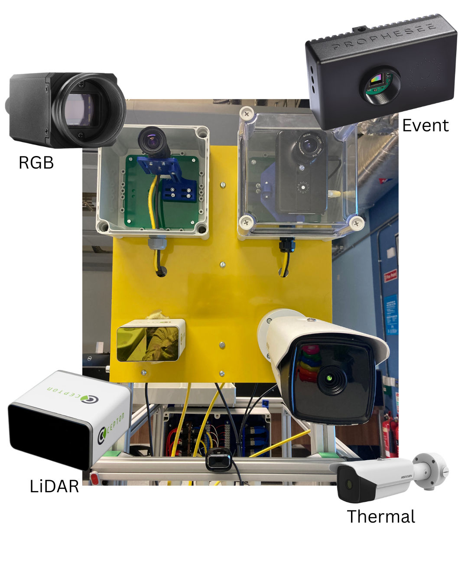

Welcome to the multi-sensor demo website! Providing you with details on the workings of each sensor

I created this website as a supplemental for my masters project. The idea was to have a
tool that provides a comprehensive overview of the various sensors of the rig, in the hopes
of making it easier for others to learn about them.
I have a Bachelor’s degree in Electronic and Computer Engineering, and am currently completing
a masters in the same field.
The reason I chose to pursue ECE is that it offers a balance between hardware and software. It is
very rewarding to know that, not only can I build something, but I can also program it to function
as intended.
Considering that it gave me the possibility to work with different kinds of sensors, rather than just one,
I decided to pick this project. Additionally, the fact that it was more software based, which is what I have
grown to appreciate most during my studies, further convinced me.
My favourite parts with this project were the designing, the implementation and the solving challenges regarding
the integration of all the different sensors into the app.
I also enjoyed building this website to go with the app, because it brings the whole project together, and it
gives the opportunity for anyone interested to learn more about it.
I hope you will like it too!